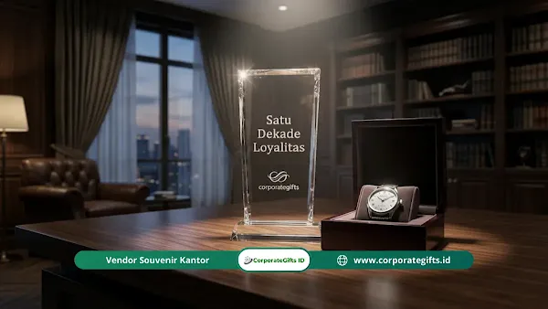

Corporate Gifts ID - Souvenir perayaan ulang tahun kerja karyawan (work anniversary gifts) adalah instrumen penghargaan strategis yang diberikan perusahaan kepada anggota tim berdasarkan lama masa bakti. Bentuk apresiasi ini dirancang berjenjang, mulai dari cinderamata fungsional untuk milestone satu tahun pertama hingga hadiah custom eksklusif atau pengalaman berkelas bagi mereka yang telah mengabdi selama lima tahun ke atas.
Pemilihan cinderamata yang tepat membuktikan bahwa perusahaan tidak hanya memandang karyawan sebagai sumber daya operasional, melainkan sebagai aset berharga yang diapresiasi perjalanan kariernya secara personal. Semakin panjang dedikasi yang diberikan, semakin tinggi pula nilai sentimental, kualitas material, dan bobot makna dari hadiah yang dihadirkan.
Poin Kunci Program Souvenir Ulang Tahun Kerja Karyawan:
- Dampak Retensi Talenta: Riset O.C. Tanner Institute menegaskan bahwa kurangnya pengakuan formal menjadi salah satu pemicu utama keputusan resign karyawan berprestasi.
- Skalabilitas Nilai Hadiah: Nilai nominal dan eksklusivitas souvenir wajib meningkat proporsional seiring bertambahnya angka tahun masa bakti.
- Milestone Kritis (5 & 10 Tahun): Masa kerja 5 dan 10 tahun merepresentasikan titik loyalitas emas yang membutuhkan plakat penghargaan, perhiasan, atau paket pengalaman premium.
- Kekuatan Personalisasi: Ukiran nama, tanggal masuk kerja, dan ucapan terima kasih personal dari jajaran direksi melipatgandakan nilai emosional hadiah.
Mengapa Perayaan Ulang Tahun Kerja Karyawan Penting bagi Retensi?
Loyalitas karyawan tidak terjadi secara instan atau otomatis. Komitmen jangka panjang terbentuk melalui akumulasi pengalaman kerja yang positif, lingkungan yang suportif, dan pengakuan berkala atas kontribusi yang telah mereka berikan kepada organisasi.
1. Pengakuan Eksplisit atas Dedikasi dan Loyalitas
Hari ulang tahun kerja (work anniversary) adalah momen paling natural dan eksplisit bagi manajemen untuk berhenti sejenak dari rutinitas kerja, lalu menyampaikan rasa terima kasih yang tulus. Karyawan yang merasa dilihat dan dihargai akan merasakan kepuasan batin yang mendalam terhadap peran mereka di kantor.
2. Korelasi Apresiasi dengan Penurunan Turnover (Riset O.C. Tanner)
Laporan global dari O.C. Tanner Institute mengungkapkan bahwa sebagian besar pekerja yang memutuskan pindah ke perusahaan lain menyebutkan minimnya pengakuan dan apresiasi emosional sebagai faktor pemicu utama. Ketika program employee recognition dijalankan secara konsisten, tingkat retensi talenta kunci meningkat drastis.
3. Membangun Budaya Apresiasi Organisasi yang Inklusif
Ketika seorang karyawan dirayakan secara terhormat di depan rekan-rekannya, hal itu mengirimkan sinyal positif ke seluruh tim bahwa perusahaan memperhatikan setiap individu. Rekan kerja yang lebih junior akan terinspirasi untuk terus bertumbuh dan mencapai milestone masa bakti yang sama.
Tabel Matriks Rekomendasi Souvenir Sesuai Masa Kerja (1, 3, 5, 10 Tahun)
Berikut adalah panduan matriks pengadaan souvenir ulang tahun kerja yang dirancang untuk memudahkan tim HR dan manajemen menyusun anggaran apresiasi yang proporsional:
| Milestone Masa Kerja | Kategori Hadiah | Contoh Produk / Pilihan Souvenir | Estimasi Budget per Karyawan | Tingkat Personalisasi | Tujuan Strategis HR |
|---|---|---|---|---|---|
| 1 Tahun (Komitmen Awal) | Fungsional Harian & Desk Setup | Tumbler stainless SUS304 grafir nama, notebook agenda kulit PU, kartu e-toll kustom, voucher belanja | Rp150.000 - Rp350.000 | Grafir nama + surat sambutan 1 tahun dari manajer | Memvalidasi keberhasilan melewati masa transisi onboarding tahun pertama |
| 3 Tahun (Stabilitas Karier) | Lifestyle & Tech Accessories | Wireless powerbank fast charging, leather tech pouch, lunch set premium, voucher staycation akhir pekan | Rp400.000 - Rp800.000 | Monogram inisial + kartu ucapan terima kasih tim | Memperkuat keterikatan sebelum godaan perpindahan kerja usia 3 tahun |
| 5 Tahun (Milestone Kritis) | Executive Gift Set & Recognition | Smart watch, earphone TWS premium, plakat kristal akrilik eksklusif, paket spa/wellness, kado sesuai hobi | Rp1.000.000 - Rp2.500.000 | Plakat berukir tanggal resmi + penghargaan di forum rapat umum | Mengukuhkan peran karyawan sebagai pilar tim berpengalaman |
| 10 Tahun+ (Loyalitas Emas) | Prestige, Luxury & Family Experience | Jam tangan mewah berukir, cincin/pin emas logo perusahaan, tiket liburan keluarga, trofi kehormatan presisi | Rp3.000.000 - Rp10.000.000+ | Penyerahan langsung oleh CEO/Direktur Utama + pidato khusus | Menghormati dedikasi satu dekade dan penjaga memori institusional |

Ide kurasi hadiah milestone masa kerja 1 tahun, 3 tahun, 5 tahun, hingga 10 tahun untuk retensi karyawan.
Ide Souvenir Terbaik untuk Ulang Tahun Kerja 1 Tahun (Komitmen Awal)
Tahun pertama bekerja adalah fase krusial di mana karyawan beradaptasi dengan ritme kerja dan budaya perusahaan. Berhasil melewati 12 bulan pertama merupakan pencapaian nyata yang patut dirayakan.
Pilihan souvenir yang efektif untuk perayaan ulang tahun kerja tahun ke-1 meliputi:
- Tumbler Stainless Steel SUS304 Grafir Nama: Produk fungsional yang digunakan setiap hari di meja kantor. Dengan ukiran nama karyawan dan logo minimalis perusahaan, hadiah ini terasa personal tanpa terkesan berlebihan.
- Voucher Belanja atau Gift Card Marketplace: Memberikan fleksibilitas penuh bagi karyawan untuk membeli barang yang benar-benar mereka butuhkan.
- Aksesoris Meja Kerja (Desk Organizer Set): Mousepad kulit, card holder, atau pulpen metal rollerball berkualitas yang menunjang kenyamanan ruang kerja harian.
- Sertifikat Apresiasi Berbingkai Elegan: Mencantumkan nama lengkap, tanggal resmi bergabung, dan tanda tangan manajer departemen sebagai bentuk validasi formal.
Catatan Penting: Hindari menempatkan logo perusahaan berukuran terlalu besar yang membuat souvenir terkesan seperti barang promosi massal. Cinderamata milestone harus terasa murni sebagai hadiah penghargaan bagi individu.
Ide Souvenir untuk Ulang Tahun Kerja 3 dan 5 Tahun (Milestone Menengah)
Memasuki tahun ke-3 hingga ke-5, kontribusi karyawan telah mengakar kuat dalam pencapaian target perusahaan. Souvenir pada fase ini harus menunjukkan lompatan kualitas dan nilai yang kentara dibanding tahun pertama.
1. Rekomendasi Hadiah Milestone 3 Tahun Kerja
Tiga tahun mencerminkan loyalitas yang solid di tengah tingginya mobilitas perpindahan karier profesional modern. Cinderamata yang disarankan:
- Perlengkapan Tech Nirkabel: Wireless charging pad meja, powerbank kulit fast charging, atau headphone peredam bising (ANC).
- Peralatan Makan & Lifestyle Eksekutif: Set lunch box stainless steel modular atau botol termal premium bersertifikasi food-grade.
- Voucher Pengalaman Rekreasi: Tiket menginap (staycation) akhir pekan bersama pasangan atau keluarga di hotel berbintang.
2. Rekomendasi Hadiah Milestone 5 Tahun Kerja (Titik Kritis)
Lima tahun adalah salah satu tonggak terpenting dalam perjalanan karier korporat. Pada fase ini, hadiah harus memiliki bobot prestise tinggi:
- Plakat Penghargaan Kristal / Logam: Dibuat secara bespoke dengan ukiran masa kerja 5 tahun yang layak dipajang sebagai simbol kebanggaan profesional.
- Perangkat Elektronik Premium: Smartwatch kesehatan, tablet ringkas, atau portable Bluetooth speaker bermerek ternama.
- Kado Berbasis Minat Personal: Hadiah yang disesuaikan secara khusus dengan hobi karyawan, seperti peralatan kopi manual brewing, perlengkapan olahraga, atau perlengkapan fotografi.
Merayakan Ulang Tahun Kerja 10 Tahun (Satu Dekade Loyalitas Emas)
Mencapai masa bakti 10 tahun merupakan komitmen luar biasa yang kini semakin langka di dunia kerja modern. Karyawan yang telah mengabdi selama satu dekade telah menjadi penjaga memori institusional dan saksi hidup berbagai fase transformasi bisnis perusahaan.
Bentuk apresiasi yang pantas untuk milestone 10 tahun:
- Perhiasan Logam Mulia atau Jam Tangan Mewah: Jam tangan klasik berukir nama di bagian belakang casing atau pin emas berkadar 18K/24K dengan logo perusahaan.
- Paket Perjalanan Wisata / Liburan Keluarga: Tiket liburan domestik atau internasional berbayar penuh yang memberikan waktu istirahat berkualitas bersama keluarga tercinta.
- Trofi Penghargaan Bespoke: Plakat mewah berbahan paduan kayu jati solid, kuningan etsa, dan akrilik tebal berlampu LED eksklusif.
- Piagam Kehormatan Resmi Dewan Direksi: Diberikan dalam sesi seremonial khusus di hadapan seluruh karyawan saat perayaan ulang tahun perusahaan (anniversary kantor).
Tips dan Praktik Terbaik Merancang Perayaan Masa Kerja yang Berkesan
Keberhasilan program perayaan ulang tahun kerja tidak hanya diukur dari besarnya biaya yang dikeluarkan, melainkan dari ketepatan eksekusi dan ketulusan emosional:
- Tepat Waktu (On-Time Delivery): Pastikan hadiah dan ucapan diserahkan tepat pada hari ulang tahun kerja karyawan, bukan tertunda berminggu-minggu yang mengurangi nilai momen.
- Keterlibatan Manajer Langsung: Penyerahan souvenir akan jauh lebih berkesan jika disampaikan langsung oleh atasan divisi, bukan sekadar paket kurir dari departemen HR.
- Pesan Ucapan yang Spesifik: Tuliskan 1-2 kontribusi atau proyek paling berkesan yang telah diselesaikan oleh karyawan tersebut selama masa baktinya.
- Dokumentasi Momen: Ambil foto penyerahan cinderamata dan bagikan di kanal komunikasi internal atau buletin perusahaan untuk memperkuat rasa kebersamaan.
Pertanyaan Seputar Souvenir Ulang Tahun Kerja Karyawan (FAQ)
Kesimpulan dan Konsultasi Pengadaan Souvenir Milestone Karyawan
Merayakan ulang tahun kerja karyawan bukan sekadar seremoni administratif rutin, melainkan investasi budaya perusahaan yang sangat berdampak pada retensi dan produktivitas tim. Dengan menghadirkan cinderamata yang tepat, dipersonalisasi secara tulus, dan diserahkan tepat waktu, perusahaan Anda membuktikan komitmen nyata dalam menghargai kontribusi setiap anggota tim.
Konsultasikan kebutuhan souvenir kantor, gift set milestone karyawan, dan plakat penghargaan perusahaan Anda bersama konsultan ahli di Corporate Gifts ID untuk mendapatkan kurasi produk terbaik sesuai anggaran institusi Anda.